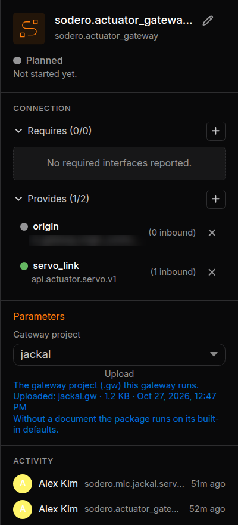
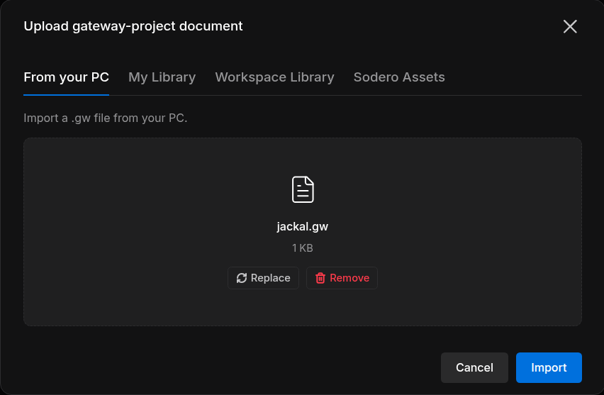
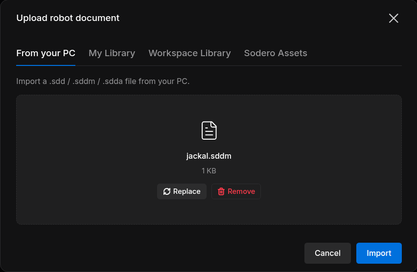

Documents and Settings¶
Most nodes work from a document: a gateway runs a gateway document (.gw), a robot controller runs a robot document (.sdd, .sddm or .sdda). Some apps also have settings that you edit in the node's inspector. This page shows how to give a node its document, which kinds exist, and how to change settings.
1. Choose or Upload a Document¶
Select the node. The Parameters section of its inspector has one field for each document the app reads, for example Gateway project on an actuator gateway or document (robot) on a controller.


- The dropdown lists existing documents and may offer Built-in default (no document). For robot operation, select the document intended for that robot; do not treat an empty document field as proof that its controller is configured.
- The line under it tells where the document came from, for example Uploaded: jackal.gw · 1 KB · …, or Not uploaded.
- Upload brings in a new document.
Upload a Document¶
- Click Upload under the field. The dialog is named after the kind, for example Upload gateway-project document or Upload robot document.
-
Choose where the file comes from:
Tab Files From your PC Drop the file on the dialog, or click Choose file My Library Your personal library Workspace Library This project's library (Libraries) Sodero Assets Robot and gateway documents published by Sodero, under Manipulator, Mobile and Legged -
Click Import.




The Station confirms the upload, for example jackal.gw uploaded as the gateway-project document jackal, and the node takes the new document. If the upload fails, the message says why: … was not uploaded — ….
- A new document is named after the last part of the node name: for
sodero.actuator_gateway.jackalit isjackal(Name the Node). - If the field already names a document, the upload replaces that document.
Upload robot documents from the Live page. Go live first, then upload .sdd, .sddm and .sdda documents in the controller's inspector.
After the upload, reopen the node and confirm that the intended document is still selected. Upload controller documents on the Live page, while the node is stopped, before starting it.
Rules¶
- A running node keeps its document. Stop the node before you upload a new document for it or change its settings.
- Each controller takes its own kind:
.sddforsodero.mmc,.sddmforsodero.mlc,.sddaforsodero.amc. - A robot document names its gateway and the gateway's actuators it uses. Connect the controller's
servo_linkto that gateway, and give the gateway at least as many actuators as the document uses.
2. Kinds of Documents¶
| Kind | File | Used by |
|---|---|---|
| Gateway document | .gw |
Actuator gateways, sodero.actuator_gateway.<name> |
| Robot document | .sdd (manipulator), .sddm (mobile base), .sdda (articulated robot) |
sodero.mmc.<name>, sodero.mlc.<name>, sodero.amc.<name> |
| Camera document | .yaml |
Camera gateways, sodero.camera_gateway.<name> |
| Map bundle | A .nav folder packed as .tar.gz, .tgz, .tar or .zip, for example site.nav.tgz |
The localizer, the navigator and visual odometry |
A Station has one map bundle: the localizer, the navigator and visual odometry share it, and a new upload replaces it. What a map bundle holds is described in Load and Configure a Map in the Stellar X manual.
3. Settings¶
Some apps declare settings. The inspector then shows one section per settings file below Parameters, titled by the app.
- Stop the node if it runs.
- Change the fields.
-
Click Save settings (Settings saved.). Reload discards your changes.
-
When the settings belong to a document, the section shows once the node has one: Choose or upload a … document in Parameters; its … settings then appear here.
- Some apps can create the file for you: click Create with defaults.
- The fields themselves come from each app.
4. Make Documents in Stellar Designer¶
Gateway and robot documents are made in Stellar Designer: the Gateway Designer makes .gw documents, and the manipulator, mobile robot and articulation editors make .sdd, .sddm and .sdda documents. Every editor and field is described in the Stellar X manual: Stellar Designer and Gateway Designer.
- A simulation gateway's document also names the robot it drives in the World (Drive Robots in the World).
- Ready-made documents for Sodero's robots are in Sodero Assets.
Documents with Old Node Names¶
Documents made before the node names changed to sodero.… still name nodes rc.…, for example rc.actuator_gateway.jackal. The Station refuses them: the message says that the file uses an obsolete format, or names an Obsolete robot file or an Obsolete gateway filename. Export the document again from a current Stellar Designer and upload the new file.
5. Messages¶
| Message | What to do |
|---|---|
| Only … files can be imported. | The file has the wrong extension for this field. Check the kind in the dialog's title. |
| … is not a robot document (expected a .sdd, .sddm or .sdda file). | Export the robot from Stellar Designer as .sdd (manipulator), .sddm (mobile) or .sdda (articulation) |
| … uses an obsolete format. … | The document still uses old node names (Documents with Old Node Names) |
| Robot '…' cannot take a new file while …, Gateway '…' is in use: … or Stop the camera before replacing its configuration | A running node uses the document. Stop the node, then upload again. |
| Stop this node before changing its settings: … | Stop the node, then save the settings again |
| … is an archive but not a .nav bundle (no localizer.yaml inside). or …: the .nav bundle is incomplete — missing … | Pack the localizer's .nav folder itself as .tar.gz or .zip, and upload that |
| … is yaml but not a camera_gateway config … | The file is not a camera document |
| Another editor changed this robot file first — reload … | Someone else changed the document at the same time. Reload, then repeat your change. |